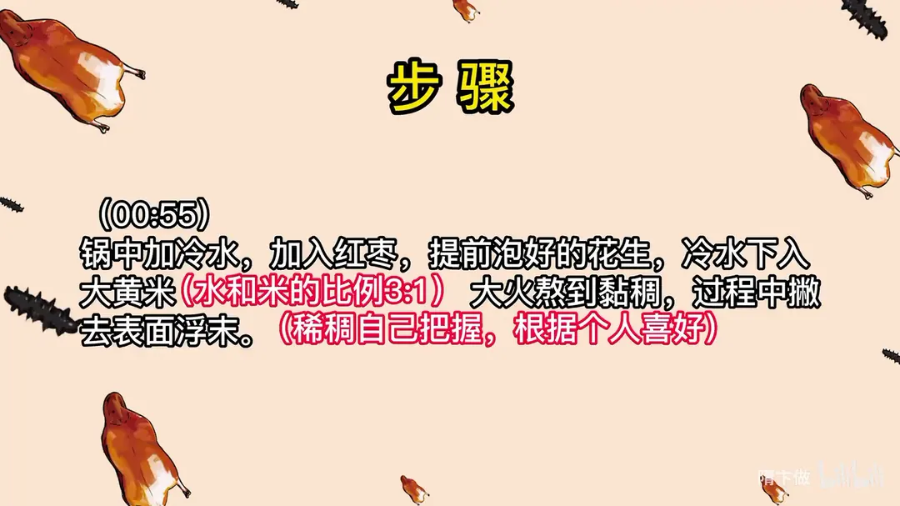
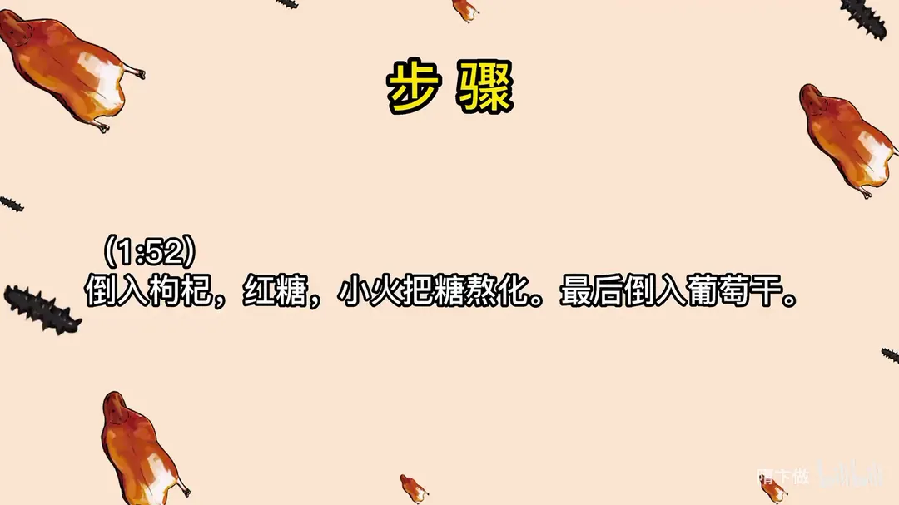

糗糕
隋卞一做。大黄米配红枣、提前泡好的花生，冷水下锅，水和米按 3:1，大火熬到黏稠撇去浮沫，再下枸杞、红糖熬化，最后拌入葡萄干。
原视频：https://www.bilibili.com/video/BV1pg4y157hG
食材
大黄米、红枣、花生 等 6 样
| 类别 | 用料 | 用量 |
|---|---|---|
| 主料 | 大黄米 | 适量 |
| 主料 | 红枣 | 适量 |
| 主料 | 花生（提前泡好） | 适量 |
| 配料 | 枸杞 | 适量 |
| 配料 | 红糖 | 适量 |
| 配料 | 葡萄干 | 适量 |
步骤
- 泡花生：花生提前泡好备用。
- 下锅熬米：锅中加冷水，加入红枣和提前泡好的花生，冷水下入大黄米，水和米的比例是 3:1。
- 熬至黏稠：大火熬到黏稠，过程中撇去表面浮沫；稀稠自己把握，根据个人喜好。
- 下糖料：倒入枸杞、红糖，小火把糖熬化。
- 收尾：最后倒入葡萄干，拌匀即可。
讲解要点
难度：★☆☆☆☆（没有技术门槛，难点只在买对米和熬煮时勤推锅底别糊）
为什么这么做
- 用大黄米不用小米：大黄米自带黏性，熬出来的黏稠度和小米不是一回事，用小米熬不出那种拉丝挂口的状态。
- 花生提前泡：泡过的花生熟得快，能和米同时出锅，否则米烂了花生还硬。
- 米冷水下锅：同样的时间，冷水下锅的粥熬出来更黏稠。
- 水米 3:1：新米旧米吃水不同，按 3:1 打底不容易出错，稀稠最后自己调。
- 开锅撇净浮沫：浮沫是涩味和杂味，撇干净口感才纯。
- 红糖小火化开：糖大火煮会焦苦、也会让汤变稀，小火熬化刚好。
- 葡萄干最后下、不煮：煮过就没了嚼头，最后拌进去保留口感。
容易翻车
- 买错米（小米、黄米分不清）就熬不出黏度，这一道从选米就决定了成败。
- 中火熬制期间要用铲子推锅底，不推会粘锅发糊。
- 加了红糖后黏度会下降一些，别急着加水，小火继续熬回来。
- 红糖品种影响颜色和味道，赤砂糖类熬出来发暗、带药味，甜度也按自己口味调。
原片尾卡


原片文案
AI 字幕校准稿
记得我们之前在山东的时候，吃过一个淄博当地的糗糕吧？就是红糖小米粥那种，蛮香，红糖和小米的香味。它那个黏黏糊糊的口感，比红糖小米粥要更粘稠一点，更好喝一点。我回家自己琢磨了一下，给你们做出来了。
相信我，给女朋友做几回这个，没有几个女孩能拒绝得了。
它跟红糖小米粥唯一的区别，用的不是小米，是大黄米，它是自带粘性的。今天我让小李去买，他也买错了，你们看他这个从颜色到大小都是有区别的，千万不能买错了，买错了这事儿就成功不了。
我那个配料也很简单，去核的大枣、花生米、红糖，我在原有基础上又加了点枸杞和葡萄干，增加了点口感和味道。开始。
锅里边倒上纯净水，红枣、花生，花生提前拿水泡了一下，它煮得更快一点。然后这个米咱们冷水下就行，同样的时间，冷水下锅的粥会更粘稠一点。
水和米的比例是多少，得看具体情况，米可能分成新的跟旧的。一般说水跟米的比例 3:1，不会出太大的错误。
上面有那个沫子，我们一定要把这沫子撇干净。大火烧开，改中火，慢慢地拿铲子推着底，别让它糊就行了。你看我们开锅之后熬了已经五六分钟，已经开始很稠了，用小米可是熬不出这种粘稠度的。拉丝的感觉，能熬到这种程度就行了。稀稠自己把握，根据个人喜好。
然后把枸杞放进去，红糖也倒进去，甜度也根据个人喜好。看像不像调完红糖之后，粘稠度会下降一些，就没有那么黏了。小火把糖熬化。
你看我们这色儿比我们吃的那个深很多，是因为我们用的红糖的品种不一样。我们最后把葡萄干倒进去，这个不用煮，不用这样嚼着，有一定的口感，好不好。
出锅了。有红糖的甜，然后因为咱熬的时间够久，把那个红枣的甜也给熬出来了，最后也有一丝丝谷物本身的香味，所以它整个甜味是能复合的。它这种黏黏糊糊的口感，是比红糖小米粥要好喝，那个稀不愣登的不挂口。
女孩子给你熬一碗这个，估计没人拒绝得了。今天就先这样，拜拜。
就是长得难看了点，我说实话，但是味道可以。糖不一样，那种赤砂糖就跟药味似的，搁一点色就重，跟咱们喝的不太一样，我买的是纯红糖。